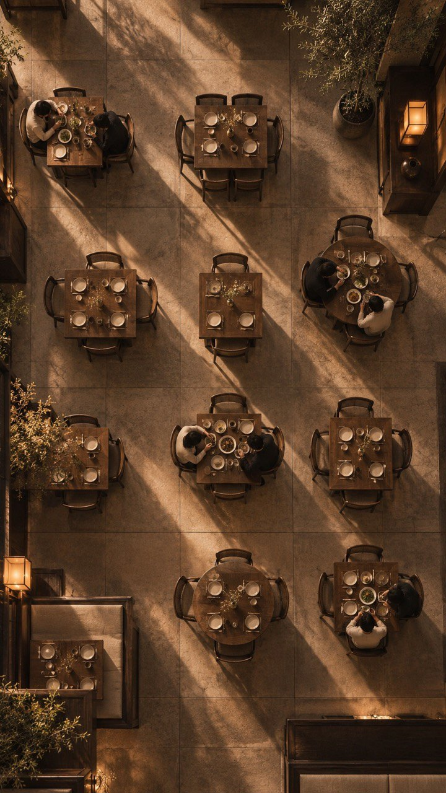

<section id="cover" data-transition="fade" style="background:#f4f0e7;color:#17130d;font-family:'Noto Serif SC', 'Songti SC', serif;padding:112px 128px 112px;display:flex;flex-direction:column;gap:40px;width:1920px">

<div style="display:flex;align-items:center;gap:24px"><p style="font-family:'Noto Serif', Georgia, serif;font-size:32px;letter-spacing:11px"><span style="color:#17130d;font-weight:700">T</span><span style="color:#a8842f;font-weight:400">I</span><span style="color:#17130d;font-weight:700">A</span><span style="color:#a8842f;font-weight:400">N</span><span style="color:#a8842f;font-weight:400">S</span><span style="color:#a8842f;font-weight:400">I</span><span style="color:#a8842f;font-weight:400">G</span><span style="color:#a8842f;font-weight:400">H</span><span style="color:#a8842f;font-weight:400">T</span></p></div>
<div style="flex:1"></div>
<h1 style="width:1090px;font-size:96px;font-weight:600;line-height:1.2;letter-spacing:6px;color:#17130d">从一道菜，<br>到一家家店的好生意。</h1>
<div style="display:flex;align-items:center;gap:28px;padding-top:8px"><p style="font-size:44px;font-weight:600;letter-spacing:6px;color:#76551f">AI + 专家的餐饮经营参谋</p></div>
<div style="width:120px;height:2px;background:#76551f;margin:8px 0"></div>
<p style="font-size:32px;letter-spacing:12px;color:#706758">拍板之前，问侍天。</p>
<div style="height:24px"></div>
<aside>定位：AI + 专家的餐饮经营参谋。专家判断加餐饮第二大脑，陪老板从筹备开业走到多店、多品牌、多市场；每个建议有依据、有人落实、可以核对。企业介绍 · 2026-09-27。以菜单设计与持续迭代为核心，贯穿新餐厅概念开创、单店经营优化与连锁规模化发展。</aside>
</section>
